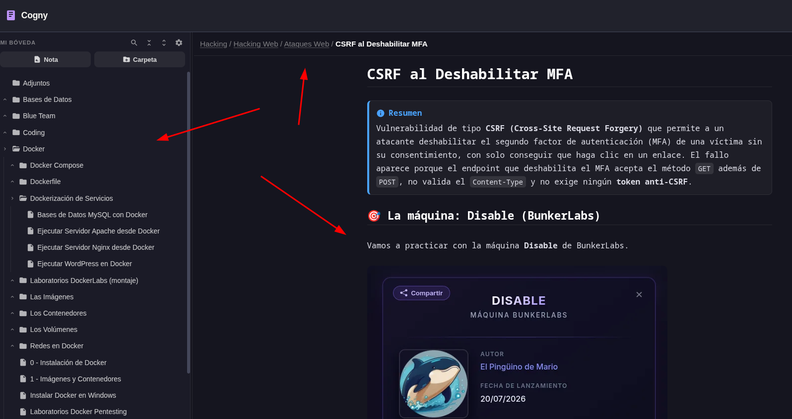
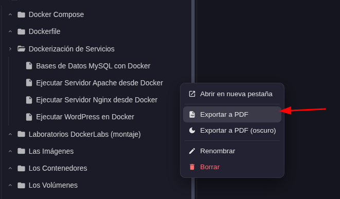
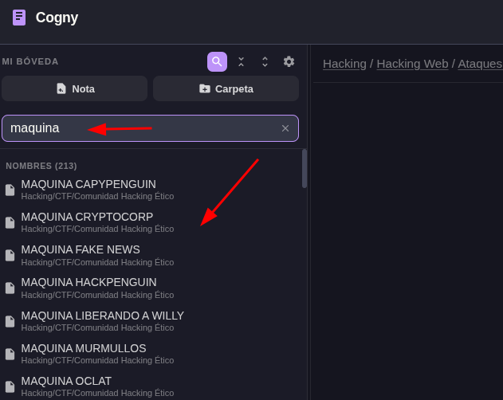
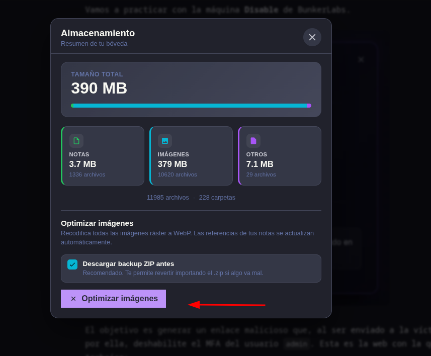

Una aplicación web para tomar notas en Markdown y construir tu propia base de conocimiento. Se despliega en tu propio servidor: tus notas no salen de ahí.

Editor y búsqueda al instante, sin tiempos de carga ni fricción.
Resaltado de código, fórmulas, diagramas y exportación de cualquier nota a PDF.
Tus notas viven en tu propio servidor. Sin nube de terceros, sin rastreadores.
Una interfaz elegante diseñada para potenciar tu productividad
Notas en Markdown organizadas en carpetas, con renderizado enriquecido

Cualquier nota, con imágenes y estilos incrustados

Encuentra cualquier nota por nombre o por contenido

Recodifica todas las imágenes a WebP, con backup ZIP previo